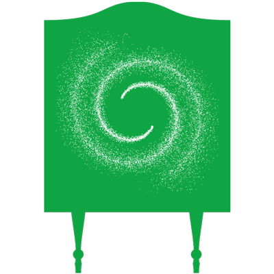

Wonder Cabinet
Snapshot taken
The Numbers
How to say it
For peer-outlet conversations
If they want a monthly framing
Audience Depth
For funder conversations
Newsletter subscribers are people who opted in on wondercabinetproductions.com. Distinct from podcast listeners (with overlap), not additive.
Top Episodes
Methodology
Downloads are measured via PRX Dovetail, IAB v2.2 compliant (≥60 seconds of media file requested, deduplicated by IP + User Agent within 24 hours).
The 30-day window is the industry-standard episode comparison window per Buzzsprout, Libsyn, and Castos. PRX's native export uses 28 days; we derive the full 30 from per-day data for fairer benchmarking.
Figures do not include Spotify listens. Spotify caches audio on their own infrastructure, so those plays are measured separately on Spotify's side and add to the totals shown here.
iOS 17 (October 2023) paused auto-downloads for inactive followers, causing a 15–25% step-down in measured downloads industry-wide. Cross-era comparisons require this context.